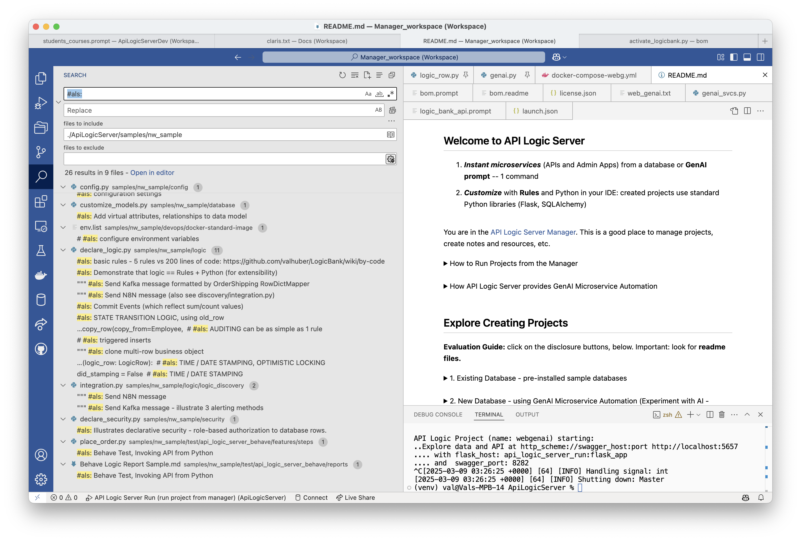
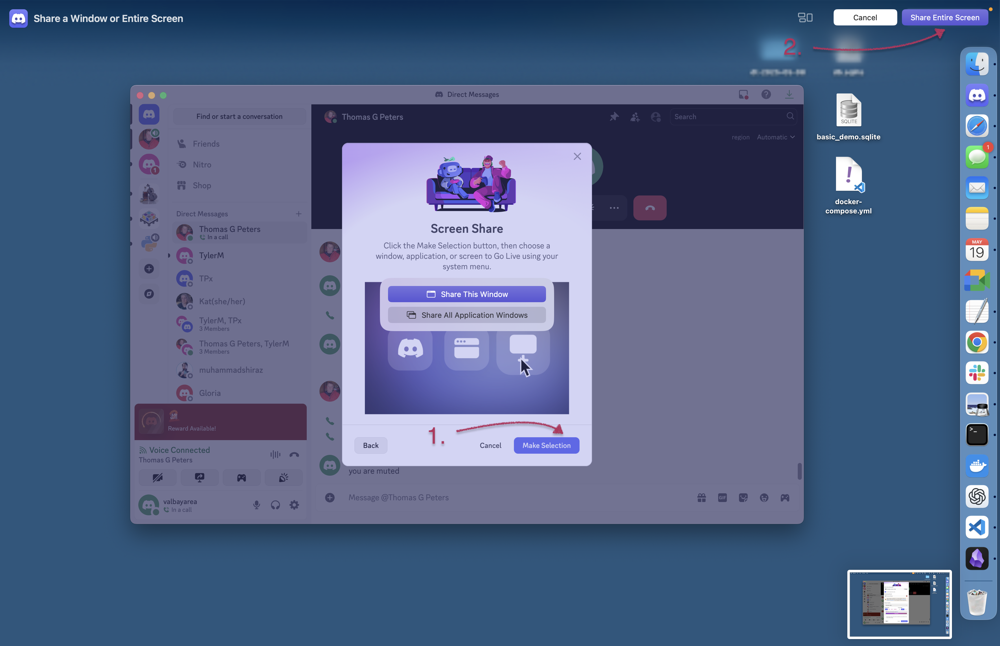

Doc Home
Welcome to GenAI-Logic (aka ApiLogicServer) documentation. In sufficently large browsers, the pages are shown at left, and the page contents are at right.
Start: Install, Samples, Training
Install and Verify
If you have the correct Python (version 3.10-3.13), install is standard (more detailed instructions here):
mkdir genai-logic # aka ApiLogicServer
cd genai-logic
python3 -m venv venv # windows: python -m venv venv
source venv/bin/activate # windows: venv\Scripts\activate
python -m pip install ApiLogicServer
genai-logic start # start manager, tutorial
Notes:
- This requires you've activated VSCode
codeCLI (to get it: Open the Command Palette (Cmd+Shift+P) and typeshell command). - The
genai-logicCLI command is the rebranding ofApiLogicServer. They are synonomous, including aliases such as gail, als. Usegenai-logic --helpto discover remaining commands.
Using PyCharm?
The Manager defaults to VSCode. If you are using PyCharm, start the mananager like this:
Verification test - create and run the demo (from the IDE in your Manager CLI, or terminal):
genai-logic create --project-name=basic_demo --db-url=sqlite:///sample_ai.sqlite
code basic_demo # not required when running from Manager (IDE starts automatically)
The resultant project contains a readme which will walk you through the process of exploring the API, app, and customization.
The manager also contains a readme that introduces you to several key samples.
Finally, explore the demos, samples and tutorials, below.
Demos, Tutorials, Samples
Type:
- Demo: Small Databases, Introduces Key Features
- Tutorial: Detailed Walk-throughs
- Samples: other databases (brief description)
- Article: shows basic steps without detail (an article reprint)
Recommendation: start with the first 2 items
| Project | Notes | Type |
|---|---|---|
| GenAI Demo | 1. Natural language creation of project / database: 1 command 2. Illustrate a very rapid create / customize / iterate cycle 3. Introduce Integration |
Demo |
| Tutorial | 1. How to Use the Key Features 2. Key code samples for adapting into your project |
Tutorial |
| App Integration | Illustrates running Kafka messaging, self-serve and customized APIs, choreographed with rules and Python | Tutorial |
| Deployment | Containerize and deploy your applications | Tutorial |
| Basic Demo | Focused use of API, Admin App and Rules on small customer/orders database | Demo |
| AI Demo | 1. Use Copilot to create new databases from natural language 2. Illustrate a very rapid create / customize / iterate cycle 3. Introduce Integration |
Demo |
| AI Drives Agile Vision | Use ChatGPT to create new databases from natural language, to bootstrap an agile create / deploy / collaborate / iterate cycle | Article |
| Agile | Behavior Driven Design and testing, using Behave | Tutorial |
| Allocation | Power Rule to allocate a payment to a set of outstanding orders | Sample |
| MySQL Docker | Create projects from sample databases: chinook (albums and artists), and classicmodels (customers and orders) | Sample |
| Sqlite databases | Create projects from pre-installed databases via abbreviations: - chinook, classicmodels, todo |
Sample |
| BudgetApp | illustrates automatic creation of parent rows for rollups | Sample |
| Banking App | Illustrates more complex logic (Funds Transfer) | Sample - obtain via git clone |
Finally, try your own database.
Training
After installing, you can optionally run the first demo, above. The key training activities are:
- Perform the Tutorial
ApiLogicServer create --project_name= --db_url=- Keep this project installed; you can find code samples by searching
#als-- see below
- Perform Logic Training
- Spreadsheet-like rules and Python for integration, and multi-table derivations / constraints
- API Customization: explore the code in
api/customize_api.py- Note this is largely standard Flask, enhanced with logic

Resources
You might find the following helpful in exploring the project:
-
Installed Sample Databases - Here are some installed sample databases you can use with simplified abbreviations for
db_url. -
Dockerized Test Databases - Then, you might like to try out some of our dockerized test databases.
-
auth - sqlite authentication database (you can also use other DBMSs)
Release Notes
06/11/2024 - 10.04.61: Ontimize Rich Client Tech Preview
06/04/2024 - 10.04.43: Improved Ontimize support
05/xx/2024 - 10.04.23: API/Logic Discovery
05/04/2024 - 10.04.01: GenAI - Generative AI Automation
12/21/2023 - 10.00.01: Application Integration (Kafka), Bug Fix
10/31/2023 - 09.05.00: Enhanced Security (global filter, permissions), Logic (Insert Parent)
09/08/2023 - 09.03.04: AI Driven Automation (preview)
09/08/2023 - 09.03.00: Oracle support
06/22/2023 - 09.00.00: Optimistic Locking, safrs 310 / SQLAlchemy 2.0.15
05/01/2023 - 08.03.06: Allocation sample
04/26/2023 - 08.03.00: Virtual attrs (Issue 56), safrs 3.0.2, LogicBank 1.8.4, project readme updates
03/23/2023 - 08.01.15: Table filters, cloud debug additions, issue 59, 62-4
02/15/2023 - 08.00.01: Declarative Authorization and Authentication
01/05/2023 - 07.00.00: Multi-db, sqlite test dbs, tests run, security prototype, env config
09/15/2022 - 06.01.00: Multi-app Projects
05/04/2022 - 05.02.03: Alembic for database migrations, admin-merge.yaml
04/27/2022 - 05.01.02: copy_children, with support for nesting (children and grandchildren, etc.)
03/27/2022 - 05.00.06: Introducing Behave test framework, LogicBank bugfix
12/26/2021 - 04.00.05: Introducing the Admin app, with Readme Tutorial
Preview Version
This pre-release includes:
- Version 15.00.51
- Python 3.13
You can try it at (you may need to use python3):
python -m pip install --index-url https://test.pypi.org/simple/ --extra-index-url https://pypi.org/simple ApiLogicServer==15.0.51
Or use (not available currently):
docker run -it --name api_logic_server --rm -p 5656:5656 -p 5002:5002 -v ~/dev/servers:/localhost apilogicserver/api_logic_server_x
Or, you can use the beta version on codespaces.
Works With
API Logic Server works with key elements of your existing infrastructure
| Works With | Notes |
|---|---|
| AI | Use Copilot to create databases, and use API Logic Server to turn these into projects |
| Other Systems | APIs and Messages - with logic |
| Databases | Tested with MySQL, Sql/Server, Postgres, SQLite and Oracle |
| Client Frameworks | Creates instant APIs that factors out business logic, where it is automatically shared for User Interfaces, APIs, and Messages |
| Your IDE | Creates standard projects you can customize in your IDE, such as VSCode and PyCharm |
| Messaging | Produce and Consume Kafka Messages |
| Deployment | Scripts to create container images, and deploy them to the cloud |
| Agile and Test Methodologies | Use Behave to capture requirements, rapidly implement them with API Logic Server, collaborate with Business Users, and test with the Behave framework |
Contact Us
We'd love to hear from you:
- Email: apilogicserver@gmail.com
- Issues: github
- Discord: we use Discord for support - join here. You should install the Discord app.
It can be tricky to use Discord for screen sharing - here is the procedure for a mac:
- Start a call with a contact
- Share your screen:

More Information
For docs, click here.
Acknowledgements
Many thanks to
- Thomas Pollet, for SAFRS, SAFRS-react-admin, and invaluable design partnership
- Tyler Band, for leadership on security
- dbvis, for a complimentary license in support of this open source project
- Marelab, for react-admin
- Armin Ronacher, for Flask
- Mike Bayer, for SQLAlchemy
- Alex Grnholm, for Sqlacodegen
- Thomas Peters, for review and testing
- Meera Datey, for React Admin prototyping
- Denny McKinney, for Tutorial review
- Achim Gtz, for design collaboration and testing
- Max Tardiveau, for testing and help with Docker
- Michael Holleran, for design collaboration and testing
- Nishanth Shyamsundar, for review and testing
- Gloria Huber and Denny McKinney, for doc revie
Articles
There are several articles that provide some orientation to API Logic Server:
- Instant APIs With Copilot and API Logic Server
- Instant App Backends With API and Logic Automation
- Instant Integrations With API and Logic Automation
- AI and Rules for Agile Microservices in Minutes
Also:
- How Automation Activates Agile
- How Automation Activates Agile - providing working software rapidly drives agile collaboration to define systems that meet actual needs, reducing requirements risk
- How to create application systems in moments
- Stop coding database backendsDeclare them with one command.
- Instant Database Backends
- Extensible Rules - defining new rule types, using Python
- Declarative - exploring multi-statement declarative technology
- Automate Business Logic With Logic Bank - general introduction, discussions of extensibility, manageability and scalability
- Agile Design Automation With Logic Bank - focuses on automation, design flexibility and agile iterations
- Instant Web Apps
Runtimes and CLI
API Logic Server is a Python Application, consisting of:
- Runtimes for ApiLogicProject execution (see below)
- CLI (Command Language Interface - provides
ApiLogicServer create`)
It executes either as a locally install (venv), or a Docker image (which includes Python). In either case, the contents are the same:

Created Projects
Created projects are designed for Customization.

Key Runtime Components

The following
| Component | Provides |
|---|---|
| Flask | enables you to write custom web apps, and custom api end points |
| SQLAlchemy | Python-friendly ORM (analogous to Hiberate, JPA) |
| Logic Bank | Listens for SQLAlchemy updates, provides Multi-Table Derivations and Constraint Rules Python Events (e.g., send mail, message) Customizable with Python |
| SAFRS | JSON:API and swagger, based on SQLAlchemy |
| SAFRS-RA | Admin App, using SAFRS |
Execution: 3-tiered architecture
The API Logic Server executes as an application server, accessed by an API, in a standard 3-tiered architecture.
Observe that logic plugs into SQLAlchemy. Logic is thus automatically shared (factored out) of custom services, and web or browser-based apps.
In most cases, the API Logic Server executes in a container, so scales horizontally like any other Flask-based server.